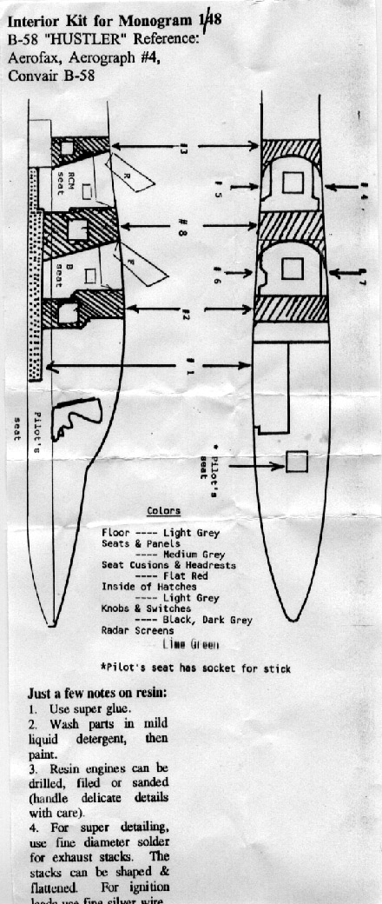

 By this time everyone is probably aware of the fact that Revell of Germany has reissued the venerable 1/48 scale B-58 Hustler. Although this kit builds up to a nice exterior representation of the Hustler it does lack considerable interior detail. To the best of my knowledge there is only one manufacture that has addressed this issue and that is Engines and Things. Today I want to take a look at this interior detail kit.
By this time everyone is probably aware of the fact that Revell of Germany has reissued the venerable 1/48 scale B-58 Hustler. Although this kit builds up to a nice exterior representation of the Hustler it does lack considerable interior detail. To the best of my knowledge there is only one manufacture that has addressed this issue and that is Engines and Things. Today I want to take a look at this interior detail kit.This detail kit consists of 11 heavy resin pieces and one vacuform piece for the crew hatches packed tightly into a small zip-lock bag and a half sheet of directions. The first thing that comes to my attention is the floor panel which has several location holes cast into it and that each piece has it’s part designation hand written in marker. The entire package gives the impression of being slightly crude, the instrument panels do not appear to be completely detailed and the detail that is present is minimal. Considering the small viewing area that will result when the model is complete this may not be a major problem. The seats feature seatbelts and padding details cast in and look like they will paint up nicely. The sidewall panels fall into the same category as the instrument panels with minimal detail. The crew hatches have no detail what so ever and will need some scratch building, especially on the interior areas.
The resin material itself appears to be free of bubbles, is light gray in color and is not excessively brittle. I did not find and casting imperfections in the pieces. The instructions are brief and include one side view diagram and one top view diagram.
If you want to open up the rear crew positions on your Hustler this is the only game in town. I consider it a starting point only as a large amount of scratch work will be involved to create a well-detailed interior. Hopefully before too long, Black Box or Cutting Edge will get into the Hustler game and give us a more comprehensive interior package.